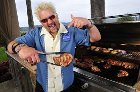

A future colorful culinary personality, Guy Ramsey Ferry was born on January 22, 1968, later changing his last name to the
original family spelling "Fieri." He opened up his first food business at the age of 10, operating his own pretzel
cart. After college, he worked as a restaurant manager, then started his own restaurant with a partner in 1996. In
2006, Fieri began his TV career after winning Next Food Network Star.

Barbecue Chicken 10$